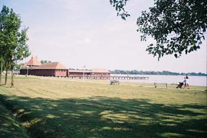

Zagrevanje, zagađenje, zelenilo
Iako ne živim ni u kakvim južnim krajevima, već sam počela da maštam o snegu. Ali, ne, 6. je decembar, sunčano je i ima 17 stepeni.
Sećam se prošle godine, bio je februar, neki seminar na Fruškoj Gori, pao je prvi ozbiljan sneg cele zime, padao je dva-tri dana, toliko da nismo mogli napolje, a opet smo svi bili srećni.
Novine pišu da je po skijaškim centrima širom Evrope procvetalo prolećno cveće, a da medvedi u Sibiru ne mogu da zaspe zimskim snom. Kofi Anan tražio je od Ujedinjenih Nacija da se održi sednica posvećena upravo globalnom zagrevanju.
Kod nas se taj problem ne shvata ozbiljno, još manje se razmišlja šta bi se trebalo preduzeti. uostalom, i na najdirektnija opasna zagađenja u Beogradu, Pančevu, Valjevu, Boru uglavnom se reaguje samo koliko se mora, uglavnom verbalno. S. predaje građansko vaspitanje u jednoj elitnoj beogradskoj gimnaziji, i kad su došli do teme o građanskom samoorganizovanju uzela je kao temu zagađenje u Pančevu. Ispostavilo se da većina đaka smatra (mada nije jasno odakle su to pokupili) kako su za pančevačko zagađenje krivi stranci, pošto 'oni hoće da cene fabrika zagađivača obore kako bi ih što jeftinije kupili'. A oni koji ne misle tako su kasnije rekli da im je bilo neprijatno da to kažu u razredu.
Elem, jasno je da se i globalno i lokalno nešto mora uraditi. Blic je u oktobru objavio text o tome kako bi mogao izgledati život u gradovima budućnosti koji zvuči kao neka vrsta naučne fantastike, ne zam šta da mislim:
"Gradovi budućnosti koristiće najnovije tehnologije i ekološki čistu energiju, a u njima će u početku živeti samo odabrani. Izbor građana za te metropole budućnosti biće sličan selekciji rialiti šoua "Veliki brat". A ko zgreši, na primer, prlja i ruži grad biće izbačen nazad u klasičnu zagađenu i prljavu urbanu sredinu. (...) Zato će gradovi budućnosti rasti u širinu i dužinu umesto u visinu, kao što je to danas običaj. Na taj način rešiće se i sadašnja loša gradska mikroklima, tj. asfalt i cement podižu temperaturu vazduha zato što apsorbuju više, a reflektuju manje sunčeve energije u odnosu na drveće, travnjake i vodene površine. I ne samo to: visoke zgrade sprečavaju duvanje vetrova, koji bi mogli da ohlade vazduh. Rezultat je prosečna dnevna temperatura u gradu viša za jedan stepen nego na selu, dok je noću ta razlika još veća, čak i do šest stepeni."
***
Jasno, zelenilo u gradovima može donekle pomoći, što u pogledu temperature, što u polgedu lepote i uživanja.
Gospođa LjiLji otišla je u posetu Los Anđelesu i odatle za Kolubaru prenosi svoje utiske o parkovima i parkićima:
"Park može biti svugde, na svakom mestu, i na najmanjem prostoru. Na krovovima nebodera,
ravnim krovovima kuća, na balkonima pri koncertnim dvoranama, na zelenim ostrvima gradskih
avenija...Parkovi su zapravo prostrani prilazi svakoj kući, čiji domaćini smatraju da su travnjak, drveće, ukrasno žbunje, potvrda građanske časti vlasniak i doma. Kuće bez ograda i kapija, kuće u parkovima."
Iznenađenje u Beogradu, međutim, nije gde sve može da se udene park, nego malo, priručno, uvek dostupno user-friendly đubrište.
Komentari
Da kod nas postoji ozbiljna partija zelenih, imala bi moj glas ma (svakim) sledecim izborima...
 kiko | 06.12.06 16:09
kiko | 06.12.06 16:09
La Lara | 06.12.06 16:15
GreenKitten | 07.12.06 02:49
Ja bih u celodnevnu setnju po Palicu, a onda na klopu i vino. Onda moze ta projekcija. OK?
 RSS feed
RSS feed
 sadržaji se objavljuju pod
sadržaji se objavljuju pod
Komentari
Zbog tehničkih problema komentari stigli do početka jula 2007. su sada u okviru teksta
Yahti | 07.08.07 09:22
Svi ti "ZELENI" nisu zajedno uspeli da sakupe potpise za izbore (10.000), a samo Nikola Aleksic ima 15.000 clanova.
Nikola M. | 27.08.07 08:54